Snakes of Malaysia
204 snake species are recorded in Malaysia in SnakeList: 63 venomous and 141 non-venomous, from 13 families.
- 204species
- 63venomous
- 141non-venomous
- 13families
Species
Showing 204 species
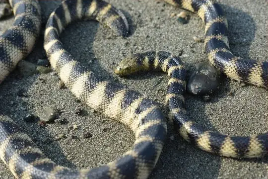
Annulated Sea SnakeHydrophis cyanocinctus- No photo yetAnomalous Sea SnakeHydrophis anomalus
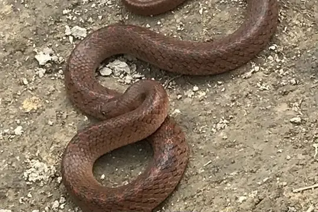
Ashy Kukri SnakeOligodon cinereus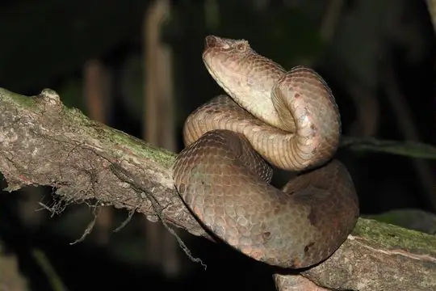
Ashy Pit-viperCraspedocephalus puniceus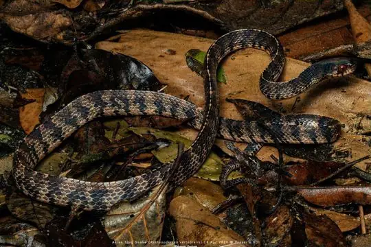
Asian Slug SnakeAsthenodipsas vertebralis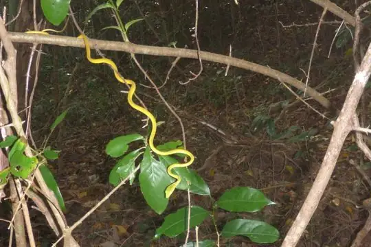
Asian Vine SnakeAhaetulla prasina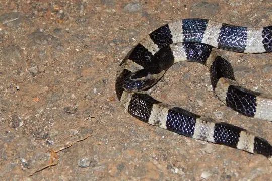
Banded KraitBungarus fasciatus- No photo yetBaram False CobraPseudoxenodon baramensis
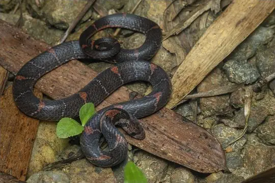
Barred Kukri SnakeOligodon signatus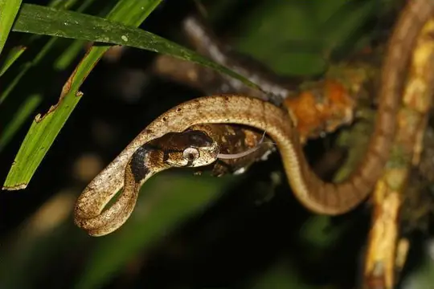
Barred Slug-eating SnakePareas nuchalis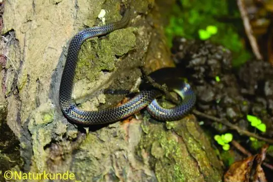
Bicoloured Reed SnakeCalamaria bicolor- No photo yetBighead Sea SnakeHydrophis annandalei
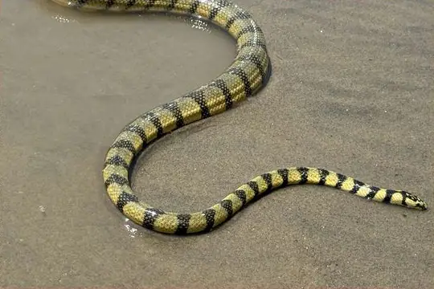
Black-banded Sea SnakeHydrophis nigrocinctus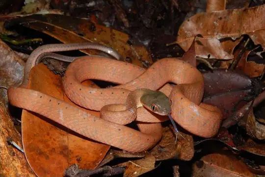
Black-headed Cat SnakeBoiga nigriceps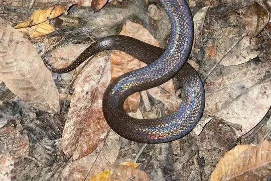
Blackwater Mud SnakePhytolopsis punctata- No photo yetBlanford's Pipe SnakeCylindrophis lineatus
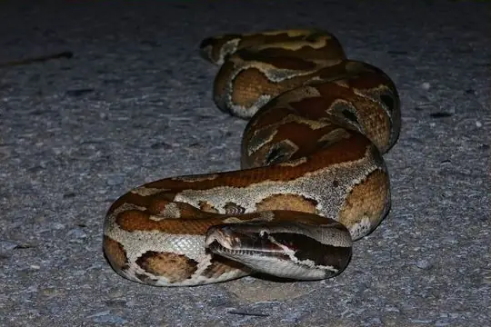
Blood PythonPython brongersmai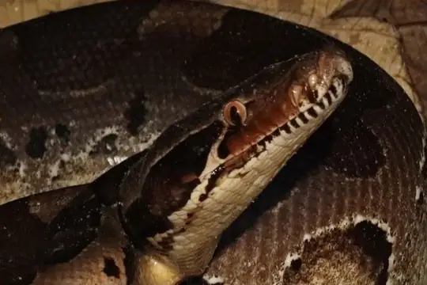
Blood Python (curtus)Python curtus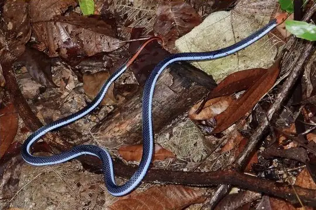
Blue Coral SnakeCalliophis bivirgatus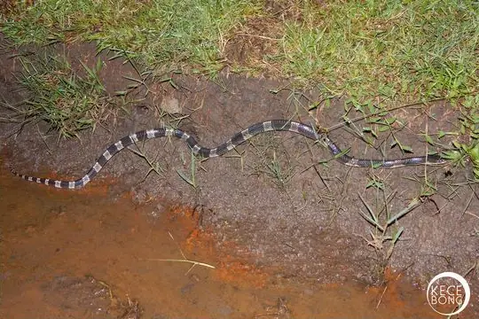
Blue KraitBungarus candidus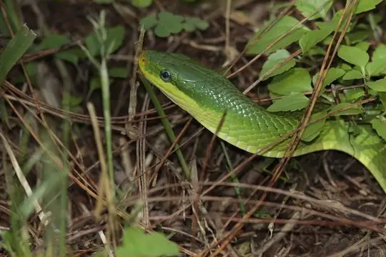
Blue-eyed Bush Rat SnakeGonyosoma coeruleum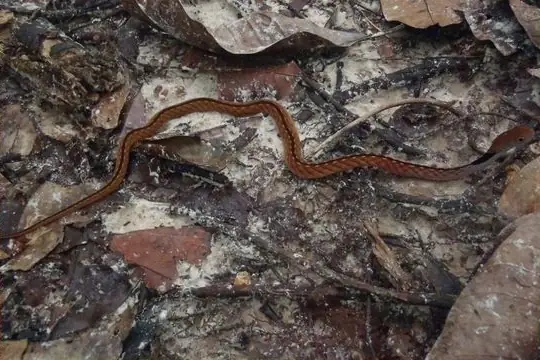
Blue-necked KeelbackRhabdophis rhodomelas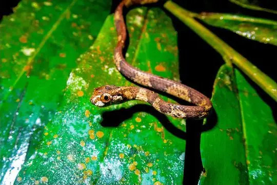
Blunthead Slug SnakeAplopeltura boa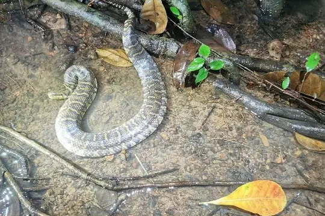
Bocourt's Mud SnakeSubsessor bocourti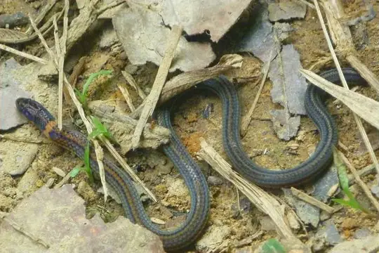
Boie's Dwarf SnakeCalamaria virgulata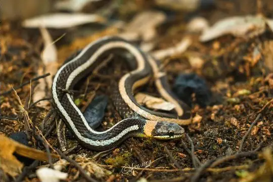
Boie's Many-Tooth SnakeSibynophis geminatus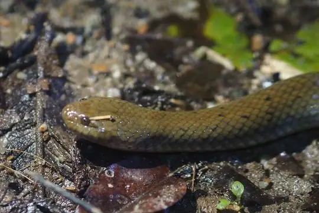
Boie's Mud SnakeHypsiscopus plumbea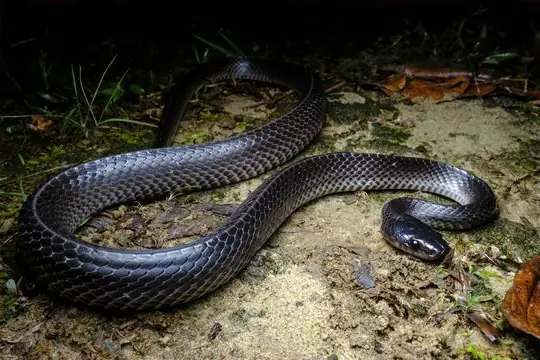
Bornean Black SnakeStegonotus borneensis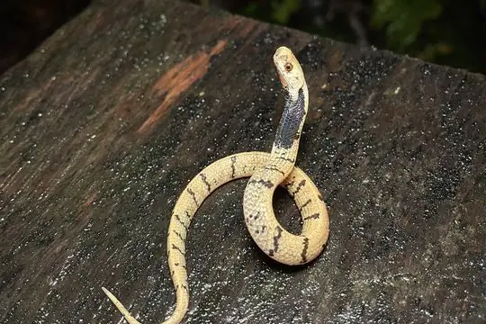
Bornean Dark-necked Slug SnakeAsthenodipsas borneensis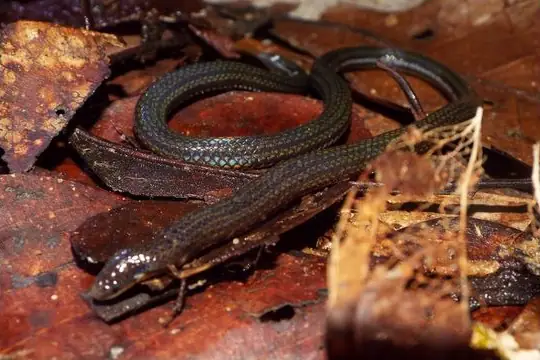
Bornean Reed SnakeCalamaria borneensis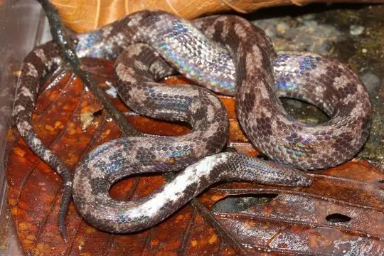
Bornean spine-jawed snakeXenophidion acanthognathus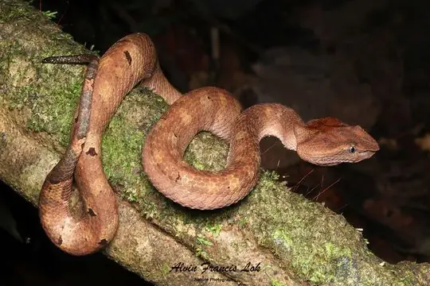
Borneo Pit ViperCraspedocephalus borneensis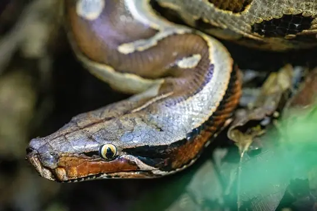
Borneo PythonPython breitensteini- No photo yetBorneo Red SnakeStoliczkia borneensis
- No photo yetBridled KeelbackHebius frenatus
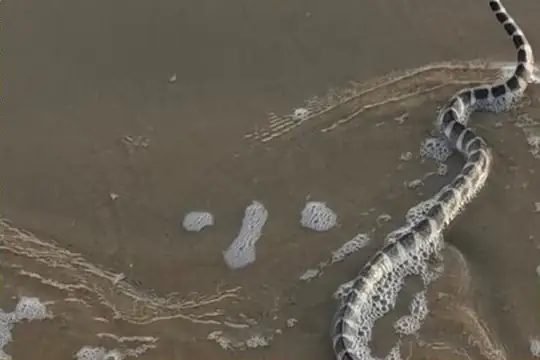
Brook's Sea SnakeHydrophis brookii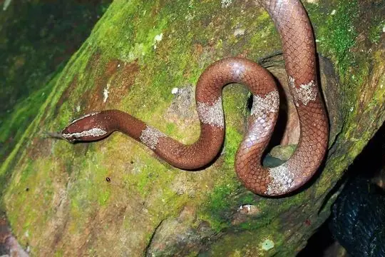
Brown Wolf SnakeLycodon effraenis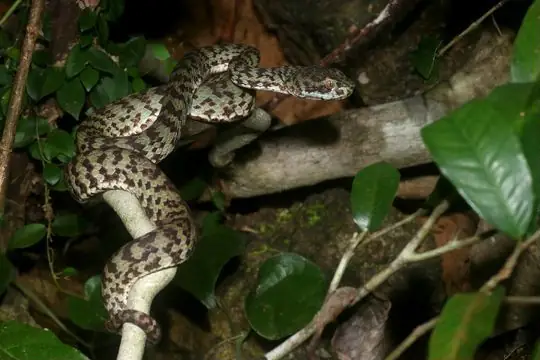
Brown-spotted Pit ViperTrimeresurus venustus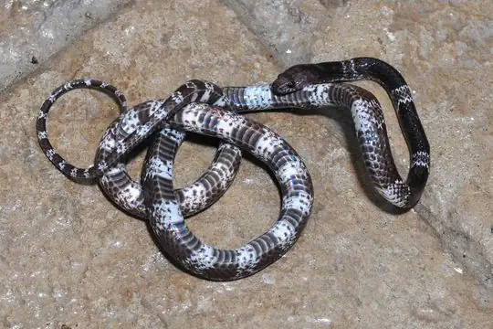
Butler's Wolf SnakeLycodon butleri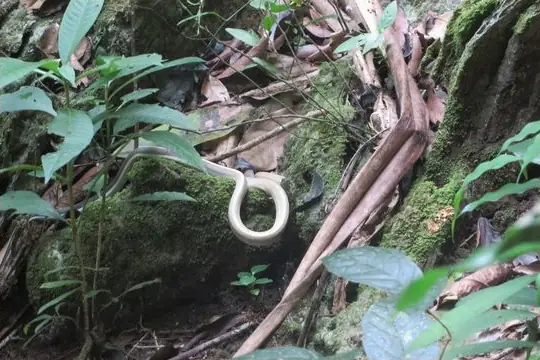
Cave RacerElaphe taeniura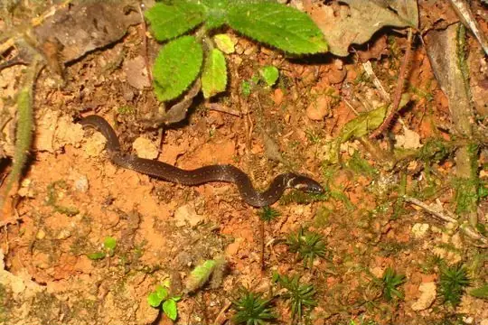
Chan-ard Mountain Reed SnakeMacrocalamus chanardi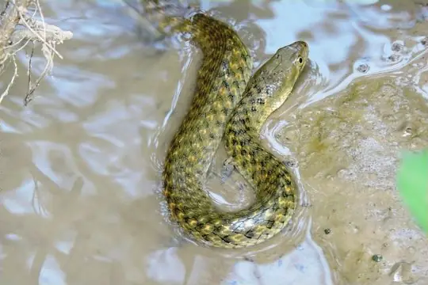
Chequered KeelbackFowlea piscator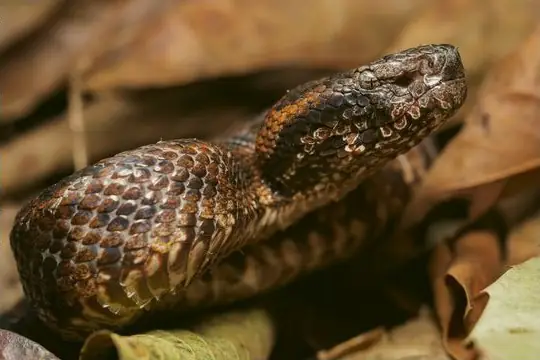
Chinese Mountain Pit ViperOvophis monticola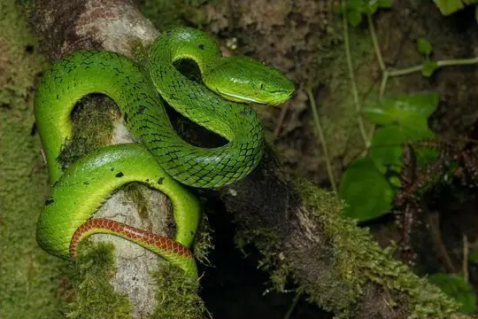
Clouded Pit ViperTrimeresurus nebularis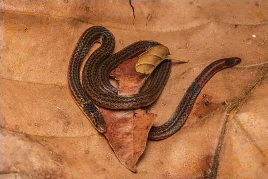
Collared Reed Snake (leucogaster)Calamaria leucogaster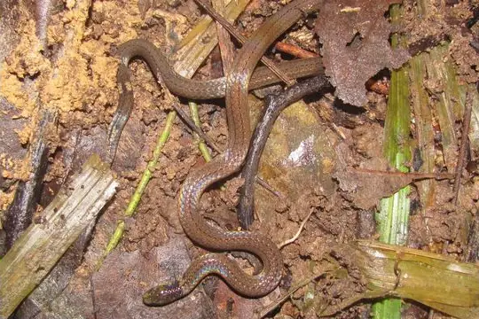
Collared Reed Snake (pavimentata)Calamaria pavimentata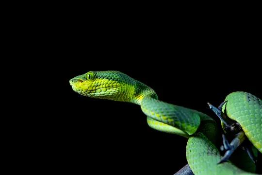
Common Bamboo ViperCraspedocephalus gramineus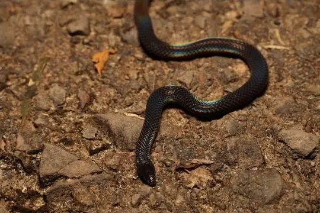
Common Collared SnakePseudorabdion collaris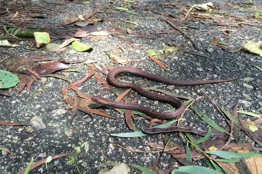
Common Mock ViperPsammodynastes pulverulentus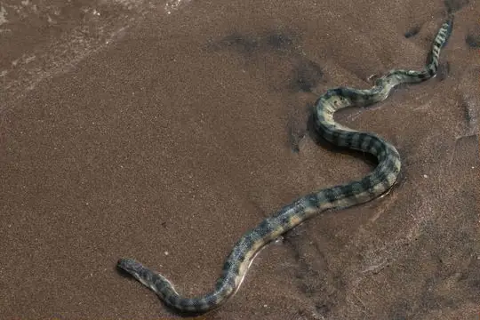
Common SeasnakeHydrophis schistosus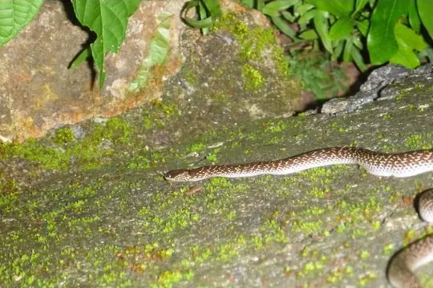
Common Wolf Snake (capucinus)Lycodon capucinus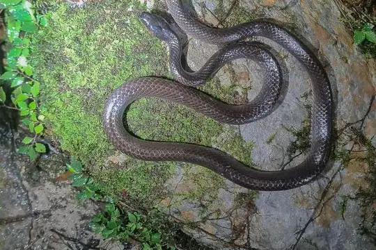
Dark-headed Sabah GroundsnakeStegonotus caligocephalus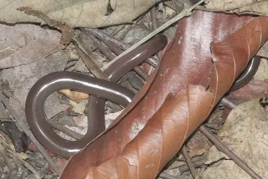
Diard's BlindsnakeArgyrophis diardii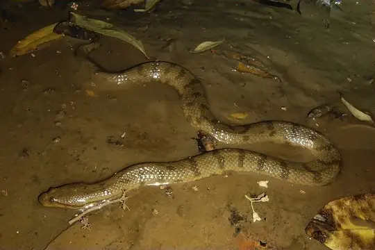
Dog-faced Water SnakeCerberus rynchops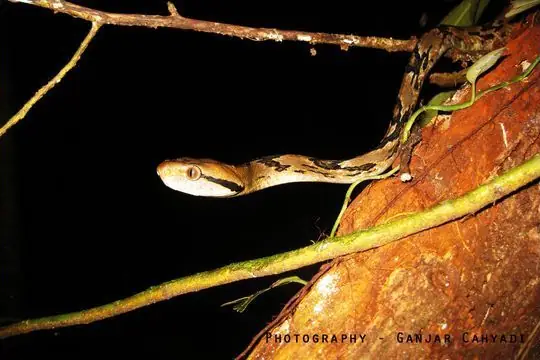
Dog-toothed Cat SnakeBoiga cynodon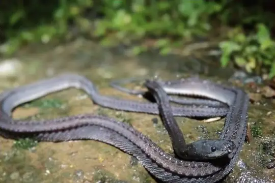
Dragon snakeXenodermus javanicus- Dusky Wolf SnakeLycodon albofuscus
- Dwarf SeasnakeHydrophis caerulescens
- Eight-striped Kukri SnakeOligodon octolineatus
- Elegant BronzebackDendrelaphis formosus
- No photo yetEngkari Pipe SnakeCylindrophis engkariensis
- Equatorial Spitting CobraNaja sumatrana
- Everett's Kukri SnakeOligodon everetti
- No photo yetEverett's Reed SnakeCalamaria everetti
- No photo yetFairy PitviperTrimeresurus buniana
- Fasciolated Kukri SnakeOligodon fasciolatus
- Genting Highlands Reed SnakeMacrocalamus gentingensis
- Gold-ringed Cat Snake (dendrophila)Boiga dendrophila
- Gold-ringed Cat Snake (melanota)Boiga melanota
- Golden-bellied Reed SnakeMacrocalamus emas
- Grabowsky's Reed SnakeCalamaria grabowskyi
- Gray Bronzeback (caudolineatus)Dendrelaphis caudolineatus
- Gray Cat SnakeBoiga siamensis
- Green Cat SnakeBoiga cyanea
- Green Trinket SnakeGonyosoma prasinum
- Green Vine Snake (nasuta)Ahaetulla nasuta
- Gua Wang Burma Wolf SnakeLycodon cavernicolus
- No photo yetGünther's sea snakeMicrocephalophis cantoris
- Haas's Bronzeback SnakeDendrelaphis haasi
- No photo yetHardwicke's Spine-bellied SeasnakeHydrophis hardwickii
- Indo-Chinese Rat SnakePtyas korros
- Indonesian Pit ViperTrimeresurus hageni
- Inger’s Slug SnakeAsthenodipsas ingeri
- Jamil Slug SnakeAsthenodipsas jamilinaisi
- No photo yetJason's Reed SnakeMacrocalamus jasoni
- Jasper Cat SnakeBoiga jaspidea
- Javan File SnakeAcrochordus javanicus
- No photo yetKapuas Reed SnakeCalamaria melanota
- Keel-bellied Water SnakeBitia hydroides
- Keeled Rat SnakePtyas carinata
- Kinabalu Giant Blind SnakeAnomochilus monticola
- No photo yetKinabalu Water SnakeHydrablabes praefrontalis
- King CobraOphiophagus hannah
- No photo yetKlemmer's Blind SnakeArgyrophis klemmeri
- No photo yetKloss' Sea SnakeHydrophis klossi
- Kopstein's Bronzeback SnakeDendrelaphis kopsteini
- Leonard's Pipe SnakeAnomochilus leonardi
- Lined Reed SnakeCalamaria griswoldi
- Linne's Water SnakeHomalopsis buccata
- No photo yetLong-tailed RingneckGongylosoma longicauda
- Low's Reed SnakeCalamaria lovii
- Malayan Banded Wolf SnakeLycodon subcinctus
- Malayan Bridal SnakeLycodon subannulatus
- Malayan Brown Pit ViperOvophis convictus
- Malayan Brown SnakeXenelaphis hexagonotus
- Malayan Many-tooth SnakeSibynophis melanocephalus
- Malayan Mountain KeelbackHebius inas
- No photo yetMalayan Mountain Reed SnakeMacrocalamus lateralis
- Malayan Pit ViperCalloselasma rhodostoma
- Malayan RingneckLiopeltis tricolor
- Malayan Spinejaw SnakeXenophidion schaeferi
- Malayan WhipsnakeAhaetulla mycterizans
- Malcolm's PitviperTrimeresurus malcolmi
- Many-spotted Cat SnakeBoiga multomaculata
- Mirkwood Forest Slug SnakeAsthenodipsas lasgalenensis
- Moluccan Flying SnakeChrysopelea rhodopleuron
- Monocled CobraNaja kaouthia
- Mount Kinabalu Pit ViperGarthius chaseni
- No photo yetMountain Dwarf SnakeCollorhabdium williamsoni
- Mountain Reed SnakeOreocalamus hanitschi
- Mountain Slug SnakePareas margaritophorus
- Mukut Smooth SnakeGongylosoma mukutense
- Muruden KeelbackRhabdophis murudensis
- Müller's Blind SnakeArgyrophis muelleri
- North Philippine Temple PitviperTropidolaemus subannulatus
- Olive Mountain KeelbackOpisthotropis typica
- Olive Small-eyed SnakeHydrablabes periops
- Orange-lipped KeelbackRhabdophis flaviceps
- Ornate Sea SnakeHydrophis ornatus
- Pahang Mud SnakeKualatahan pahangensis
- Painted BronzebackDendrelaphis pictus
- Painted Keelback (cerasogaster)Xenochrophis cerasogaster
- Palm vit viperCraspedocephalus wiroti
- Paradise Tree SnakeChrysopelea paradisi
- Pope's Bamboo Pit ViperTrimeresurus popeiorum
- No photo yetPrakke's Reed SnakeCalamaria prakkei
- Radiated RatsnakeCoelognathus radiatus
- Rainbow Mud SnakeEnhydris enhydris
- Rainbow Tree SnakeGonyosoma margaritatum
- Red Bamboo SnakeOreocryptophis porphyraceus
- Red Mountain KeelbackHebius sanguineus
- Red-bellied KeelbackRhabdophis conspicillatus
- Red-headed KraitBungarus flaviceps
- Red-necked KeelbackRhabdophis subminiatus
- Red-tailed Pipe SnakeCylindrophis ruffus
- Reticulated PythonMalayopython reticulatus
- Ringed Kukri SnakeOligodon annulifer
- No photo yetRobust SeasnakeHydrophis melanosoma
- Sabah KeelbackHebius flavifrons
- Sabah Mountain Smooth Slug SnakeAsthenodipsas stuebingi
- Sabah Pit ViperTrimeresurus sabahi
- Samarinda Reed SnakeCalamaria hilleniusi
- Sarawak KeelbackHebius sarawacensis
- Sarawak Mud SnakeHomalophis doriae
- No photo yetSarawak Reed SnakePseudorabdion saravacense
- Schmidt's Reed SnakeCalamaria schmidti
- Schulz's Reed SnakeMacrocalamus schulzi
- Seale’s Banded Asian Wolf SnakeLycodon sealei
- Selangor Mud SnakeRaclitia indica
- Shore Pit ViperTrimeresurus purpureomaculatus
- Short Sea SnakeHydrophis curtus
- Siebold's Mud SnakeFerania sieboldii
- No photo yetSlender Reed SnakeCalamaria gracillima
- Smooth Slug SnakeAsthenodipsas laevis
- Southeast Asian BockadamCerberus schneiderii
- Speckled Coral Snake (maculiceps)Calliophis maculiceps
- Spiny-headed SeasnakeHydrophis peronii
- Spotted Coral SnakeCalliophis gracilis
- Spotted KeelbackXenochrophis maculatus
- Stoke's SeasnakeHydrophis stokesii
- Stolickza's Stream SnakeParaxenodermus borneensis
- Striped Blind SnakeRamphotyphlops lineatus
- Striped Coral Snake (intestinalis)Calliophis intestinalis
- Striped Coral Snake (nigrotaeniatus)Calliophis nigrotaeniatus
- Striped KeelbackXenochrophis vittatus
- Striped RingneckGongylosoma baliodeira
- Striped Sea SnakeHydrophis fasciatus
- Sumatra Pit ViperTrimeresurus sumatranus
- Tentacled SnakeErpeton tentaculatum
- Three-Banded Bridled SnakeLycodon tristrigatus
- Tioman Kukri SnakeOligodon booliati
- Tioman Reed SnakeCalamaria ingeri
- Tweedie's Reed SnakeMacrocalamus tweediei
- Twin-barred Tree SnakeChrysopelea pelias
- Variable Reed SnakeCalamaria lumbricoidea
- No photo yetVertebral Kukri SnakeOligodon vertebralis
- Viperine Sea SnakeHydrophis viperinus
- No photo yetVogel's Reed SnakeMacrocalamus vogeli
- Wall's BronzebackDendrelaphis cyanochloris
- No photo yetWest Coast Black-headed Sea SnakeHydrophis torquatus
- White-bellied Rat SnakePtyas fusca
- No photo yetWhite-bellied Reed SnakeCalamaria albiventer
- White-collared Reed SnakePseudorabdion albonuchalis
- White-headed Blind SnakeIndotyphlops albiceps
- White-striped Reed SnakeCalamaria lateralis
- Yellow Sea SnakeHydrophis spiralis
- Yellow striped SnakeCoelognathus flavolineatus
- Yellow-bellied Reed SnakeCalamaria suluensis
- Yellow-lipped Sea KraitLaticauda colubrina
- Yellow-spotted Keelback Water SnakeFowlea flavipunctatus
- No photo yetAcrochordus dubius
- No photo yetColuber melanepis
- No photo yetLiopeltis tiomanica
- No photo yetPopeia buniana
No snakes in Malaysia match.
Malaysia’s snakes in numbers
- Families: Colubridae 109, Elapidae 31, Viperidae 19, Homalopsidae 13, Pareidae 10, Typhlopidae 5, Pythonidae 4, Cylindrophiidae 3, Xenodermidae 3, Acrochordidae 2, Anomochilidae 2, Xenophidiidae 2, Pseudaspididae 1.
- 45 are recorded in no other country in SnakeList: Baram False Cobra, Bornean Dark-necked Slug Snake, Bornean spine-jawed snake, Chan-ard Mountain Reed Snake, Dark-headed Sabah Groundsnake, Engkari Pipe Snake, Fairy Pitviper, Genting Highlands Reed Snake, Golden-bellied Reed Snake, Grabowsky's Reed Snake, Gua Wang Burma Wolf Snake, Inger’s Slug Snake and 33 more.